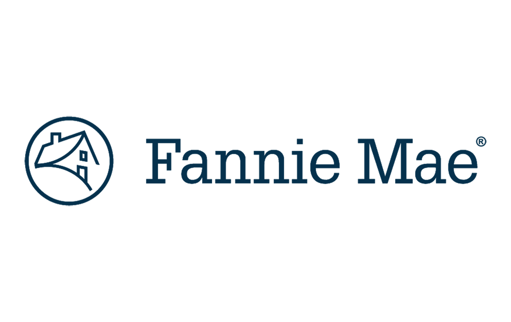
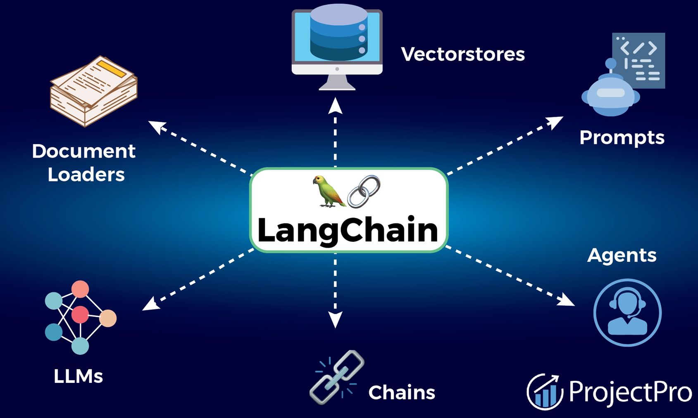
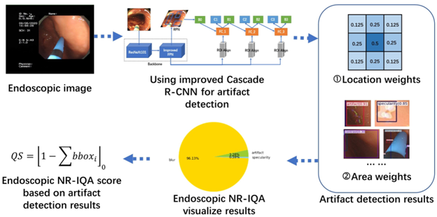
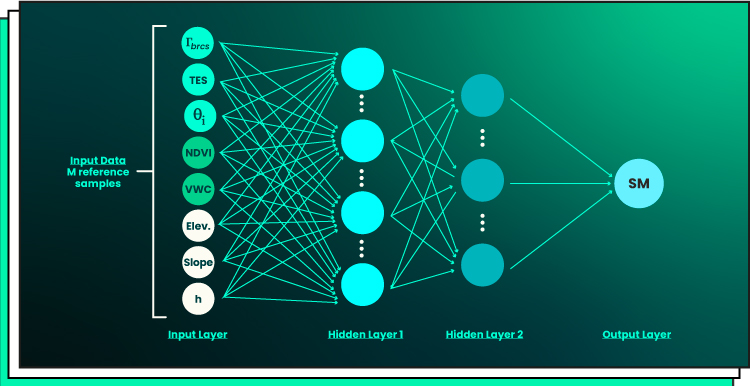

Statistics and Analytics
Cause-and-effect reasoning, hypothesis testing, variance analysis, correlation modeling, and regression. The grounding that shapes how I read data before touching a model.
Senior Data Scientist
I build production-ready AI systems that combine machine learning, data engineering, and evaluation-first design to solve high-impact business problems.
I'm a Senior Data Scientist at Orion Innovation, currently engaged on a B2B program with PwC. I build AI systems: LLM applications, agent workflows, and evaluation pipelines, with a focus on reliability, interpretability, and real-world constraints.
My work spans cross-domain problems in financial risk, compliance, and blockchain analytics, across Fannie Mae, CryptoClear, University at Buffalo, and Infosys. I enjoy going beyond modeling: thinking about data pipelines, evaluation frameworks, and how decisions driven by models translate into measurable outcomes.
I'm particularly drawn to problems where the data is messy, objectives are unclear, and there is no predefined path. That is where strong problem framing and first-principles thinking matter most.
A lot of how I think is shaped by the people around me: researchers, colleagues, and the companies I work with. I try to understand their perspective first, go deep on the domain, and stay curious enough to connect threads across fields.
Outside of work, I play piano and spend time in nature. It helps me reset and think more clearly.
I focus on the full AI lifecycle, from business framing to production operation.
Cause-and-effect reasoning, hypothesis testing, variance analysis, correlation modeling, and regression. The grounding that shapes how I read data before touching a model.
Predictive modeling, anomaly detection, NLP, graph learning, and multimodal experimentation built around real-world constraints and interpretability requirements.
LLM applications, agent orchestration, retrieval workflows, tool integration, guardrails, and evaluation-driven iteration from prototype to production.
Reliable pipelines, feature-ready datasets, validation layers, and data workflows designed for reproducibility, auditability, and speed.
AWS and Azure deployment patterns, SageMaker, monitoring, performance optimization, and architecture decisions that hold up under production load.
My process is designed to keep research quality and production reality aligned.
Translate business goals into technical objectives, constraints, and measurable success criteria.
Audit source reliability, identify leakage and bias risks, and shape data contracts early.
Select model and architecture by trade-offs: quality, latency, cost, interpretability, and failure modes.
Build reproducible benchmarks with business-relevant metrics, edge-case tests, and error analysis loops.
Ship with observability, monitor drift and reliability, then close the loop with iterative improvements.
I architect production AI systems for messy, high-stakes environments where data quality, reliability, and decision speed all matter at once.
Domain Coverage
Beyond chatbots: the real scope was system design — how retrieval, orchestration, evaluation, and governance layers connect into something an enterprise can run, audit, and trust.
Demo to MVP to production: moved fast, but every prototype decision was a future production constraint. Speed without architectural discipline just accelerates the wrong thing.
Architecture over features: agent workflows break at ambiguity, not at capability. Designed the containment layer first — what the system does when it doesn't know, not just when it does.
The actual hard problem: trace visibility, policy-aware retrieval, and evaluation pipelines aren't bolt-ons. They have to be designed in — retrofitting observability into a live system is far more expensive than building it right.

Anomaly detection: explainability-first — a flagged loan needed to be immediately traceable by an analyst, not just accurate in aggregate.
Policy retrieval: policy documents contradict and overlap in ways that fool standard RAG. The real problem was hallucination suppression, not answer quality.
Platform integration: 15+ internal systems not designed to communicate. Built the orchestration layer that made capital runs reliable end-to-end — treating every handoff as a potential failure surface.
Validation posture: designed to surface what the model doesn't know — traceable uncertainty, not an aggregate metric that passes.
 CryptoClear
CryptoClear
Applied Scientist
Data truth first: detection built on inconsistent multi-provider data produces confident wrong models. Established ground truth before any modeling.
Graph structure: coordinated fraud lives in wallet networks and time-sequenced moves, not individual transactions. Transaction-level models miss the pattern entirely.
Iteration over accuracy: a system that can adapt to shifting fraud patterns beats one that's accurate but slow to retrain.
Analyst lag: the gap between "model flagged" and "analyst acts" is where bad actors escape. Closing that lag mattered as much as detection performance.
Research Scientist
The failure mode that matters: models that fail silently — high confidence, wrong output — under distribution shift. Those are the dangerous ones in deployment.
Measurable robustness: exhaustive input testing isn't tractable. Built a sampling strategy that estimates robustness coverage honestly, including its own limits.
Fine-tuning as a probe: used VQA fine-tuning to observe degradation behavior under perturbation — not to chase benchmark numbers, but to map where these models break.
Production framing: outputs structured as evaluation templates for teams deploying under real distribution shift — not academic findings that don't transfer.
 Infosys
Infosys
Data Scientist (Jul 2021 - Aug 2023)
Data Science and BI Engineer (Sep 2019 - Jul 2021)
Customer risk intelligence: re-engineered sentiment analysis pipelines with NLP and Transformers, pushing model accuracy from 88% to 95% for customer risk profiling, shipped and monitored in production.
Gen AI, early: designed and deployed a generative AI chatbot using advanced NLP, improving customer interaction satisfaction by 15% and reducing support load across teams.
LLM tooling: built auto-tagging pipelines for LLM training data that cut manual labeling effort by 60% and compressed model iteration cycles significantly.
Causal modeling: applied Propensity Score Matching and Difference-in-Differences to evaluate employee retention strategies, improving decision-making accuracy by 15% and quantifying attrition risk for leadership.
Data engineering foundation: led ETL pipelines, SQL optimization, and data modeling that improved data quality by 25% and accessibility by 35%; designed and tuned 10+ Power BI dashboards with DAX and Row-Level Security, cutting load times by 20%.
Recognition: awarded the INFY-RISE Award for exemplary leadership and execution on a business-critical project.
Personal work built on one discipline: understand the problem deeply before touching the model. Each project taught me how to frame, research, and communicate. Not just execute.

Problem: Recruiting teams needed faster, more reliable candidate screening and role-match insights across large resume volumes.
Approach: Built an LLM-powered ATS workflow with LangChain orchestration for parsing, semantic matching, and structured candidate summaries.
Impact: Reduced manual screening effort, improved shortlist relevance, and made hiring decisions more consistent and explainable.
Tech: Python, LangChain, LLM APIs, vector search, prompt optimization
Problem: Traditional forecasts often lag real-time sentiment shifts during volatile campaign cycles.
Approach: Built Twitter sentiment analysis pipelines and integrated forecasting features to estimate election trend movement.
Impact: Improved interpretability of political momentum signals and supported more responsive forecasting.
Tech: Python, NLP, sentiment analysis, time-series modeling
View publication (PDF) ↗Problem: Public safety teams needed data-driven visibility into emerging high-risk zones instead of reactive response patterns.
Approach: Built predictive modeling pipelines on historical incident and geospatial data to forecast hotspot intensity and location trends.
Impact: Enabled earlier intervention planning, better resource allocation, and clearer hotspot trend communication.
Tech: Python, geospatial analytics, predictive modeling, data visualization
View findings (PDF) ↗
Problem: Artifact-heavy endoscopic imagery reduced downstream diagnostic quality and model reliability.
Approach: Implemented CNN-based artifact detection with TensorFlow and OpenCV, and applied Cascade R-CNN concepts for endoscopic image quality workflows.
Impact: Improved artifact visibility and built a practical quality-control pipeline relevant to healthcare, manufacturing, and automotive imaging contexts.
Tech: Python, TensorFlow, OpenCV, CNN, Cascade R-CNN

Problem: Multimodal systems can fail silently under shifts, perturbations, and ambiguous visual-text combinations.
Approach: Studied robustness patterns and interpretability behavior in multimodal deep learning architectures under controlled stress conditions.
Impact: Produced reproducible findings that improve model-governance readiness and safer deployment decisions.
Tech: PyTorch, multimodal deep learning, interpretability analysis, robustness evaluation
View publication (PDF) ↗
Problem: Fraudulent billing patterns can silently increase Medicare spending and evade rule-based checks.
Approach: Built fraud detection analytics to identify anomalous provider behavior and suspicious claim clusters.
Impact: Improved visibility into high-risk claim behavior and strengthened support for proactive cost-mitigation decisions.
Tech: Python, anomaly detection, healthcare analytics, statistical modeling
View report (PDF) ↗What building these taught me
Posts and reflections I've shared publicly, on learning, systems, and what the work actually teaches you.
An exploration of distance metrics (cosine similarity, Euclidean, Manhattan) and how they map to intuitions from everyday life. Written to make abstract math feel grounded and usable.
Read on Medium ↗I wasn't selected, and that clarity was useful. Honest reflections on ML depth, where I got stuck (Autoencoders, loss functions), and why every interview is a diagnostic, not just a verdict.
Read on LinkedIn ↗Open to meaningful conversations around data science work, practical problem-solving, and career growth.